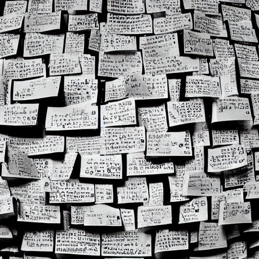

All notes are different
All notes are not created equal as they have different purposes and convey different intentions.

- Fleeting notes should be discarded
- A writing inbox with prompts. If you can search tags easily, this can be implemented using a
drafttag; - A log is useful to collect small things (tweets, figures, quotes) as you go through the day;
- Notebooks are a collection of references, explain why we're interested in a topic and what questions we expect to answer;
- Literature notes should be kept separate. They can be useful to gather quotes that may be useful later, or distill the intent / knowledge of the book. I am not sure yet what is the best way to take literature note and how they fit in this system;
- Knowledge should be distilled in Zettelkasten, if possible made evergreen;
- Larger projects, which require a lot of code and data should be kept out of the directory not only for practical purposes, but also because we intend them to be self-sufficient. It should be possible to integrate them using e.g.
git submoduleso notes can refer to them directly. - Reports describe a state of affair at a given point in time and only make sense in a timeline (for instance explaining I'm discontinuing MCX);
- Concept notes (such ac Ornstein-Uhlenbeck kernel) can be added if they are processed, contain new content (beware of the wikipedia effect); Most of the time they're used as knowledge hubs.